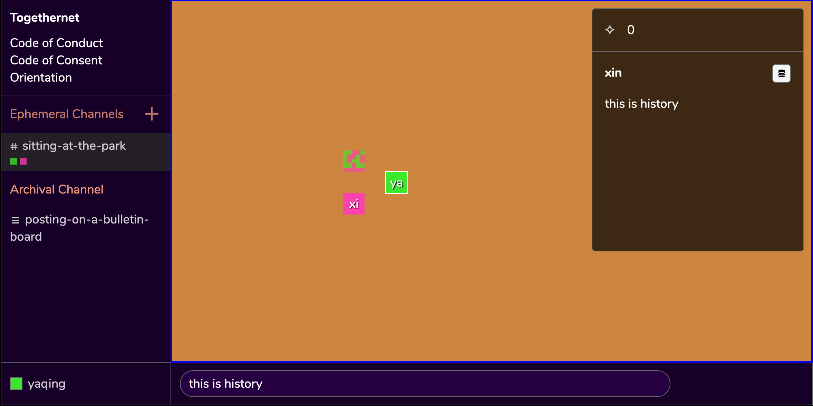

Welcome!
Listen to this section:
Hi! Thank you for visiting TogetherNet's website – we are thrilled to have you here. We have designed this site with you in mind. Before diving deeper, we invite you to learn about a couple possible ways to navigate this website:
Audio
- If you prefer listening to the recorded version of this site, click on the "+" icon on the upper-right corner to turn on the Voice Over Mode. Playable audio clips will appear under every section of the web pages. Note that we use cookies to store your accessibility preference.
- Alternatively, you may visit our SoundCloud page to listen to an uncut recording of the entire site.
Visual
- If you prefer viewing this website in black and white, click on the "+" icon on the upper-right corner to turn on the High Contrast Mode.
Text-Only
- We have also rendered this site into text-only documents, hosted on Google Doc and downloadable as a PDF.
We understand that access needs are nuanced, intersectional and expansive, and we welcome you reaching out to ask a question or make an accessibility request.
Email Us1.1 What is TogetherNet?
Listen to this section:
TogetherNet is an open-source software that invites groups of 10 or fewer participants to build community archives through practices of consent.
Designed around the ethos of data transparency and consent, TogetherNet's goal is to transform digital rights policies such as the right to be forgotten into an embodied practice through reimagining software architecture and user experience.
This tool and initiative stands on the shoulders of Consentful Tech Zine by Una Lee and Dann Toliver and Design Justice Network Principles — by considering transparency and consent every step of the way, the source code serves as both a technical and a moral document that seeks to uncover systems of power and uncertainties embedded in network technologies.
1.2 How does it work?
Listen to this section:
TogetherNet contains two modes of communication: the Ephemeral Channel and the Archival Channel.
Ephemeral Channel
![the TogetherNet interface contains multiple panels. In the upper-left panel, the TogetherNet logo is followed by links to Code of Conduct, Code of Consent, and Instructions. In the center-left panel there is an Emphemeral Channel called 'sitting at the park' and an Arhival Channel called 'posting on a bulletin board'. In the center navigation space, a user named 'xin' appears as a bright purple square avatar on a warm, organge background. A message record – 'hi!' has been left in the navigation space and appears as a purple square a shade darker than xin's avatar. In the bottom-center panel, there is a message input field for the user to write their messages.](assets/screenshots/ephemeralChannel.png)
By default, your team will communicate in the Ephemeral Channel, which is built on WebRTC, a peer-to-peer protocol that encrypts your messages.
When you communicate with your team using the Ephemeral Channel, messages are only temporarily stored inside the browsers and do not go through a centralized server. This means that once the last participant in the room closes their browser tab, messages that your team have not archived are permanently deleted.
Tip: messaging in the Ephemeral Channel is comparable to talking to friends on a picnic blanket at the park — your conversations won’t be heard unless someone is intentionally trying to listen in.
Consent to Archive
In order to prevent permanently losing important messages, your team will need to go through a process called Consent to Archive.
Consent to Archive is a feature that uploads a single message or thread from inside the Ephemeral Channel onto a centralized database. This database may be self-hosted or hosted externally on a third party’s server.
Tip: once a message has been archived, participants can use the Revoke Consent feature to reverse their decision.
Archival Channel
![once the user enters the the archival channel, the left-side panels of TogetherNet remains the same but the center navigation space is now replaced by the archive space, colored by a background as blue as the dark sky. Archived messages are displayed on the archived interface in white-colored fonts – 'February 17 2021, #sitting-at-the-park, 1. hi! written by xin, consent to archive participants: Yaqing, Xin'. On the bottom of the interface, there is a text input field that allows the user to comment on an archived message. On the right side of the input field there is a download icon to save the archive to the computer.](assets/screenshots/archivalChannel.png)
The Archival Channel connects to the centralized server, and displays messages that your team have archived in the form of meeting notes.
From here a participant has the ability to comment on an archived message. There is also an option to download the meeting notes as an HTML file.
Tip: using the Archival Channel is comparable to posting a note on a bulletin board — your words are now floating out there on the World Wide Web as a form of public record, and others may quote or use it in ways that are outside of your control. Organizations often need to create content that needs to be seen by the public and this feature is useful for that.
1.3 Is TogetherNet for me?
Listen to this section:
TogetherNet is created with micro-communities in mind. In particular, those who work under the broad umbrella of art, design, culture and technology. This software is for you if you are an artist, designer, community organizer, technologist, researcher, educator, or student interested in –
- Exiting surveillance capitalism
- Participating in consentful communications on the web
- Building community-owned digital archives
Use Cases
- You may be a book club, and instead of defaulting to Facebook groups, you might use TogetherNet to create a list of books to read.
- You may be a group of art students working on a community agreement, and instead of defaulting to Google Doc, you might use TogetherNet to document your collective needs.
- You may be a group of community organizers and instead of defaulting to Instagram, you might use TogetherNet to save a list of teach-in content.
Known Vulnerabilities
That said, this software is still in an experimental stage and there are known vulnerabilities. If you are someone who is looking to work with highly sensitive content or if you are concerned with targeted surveillance, we recommend you look into Signal.
Next Chapter
Listen to this section:
If you're feeling ready to dig deeper, we invite you to proceed to the Getting Started page.
Ready to Get Started